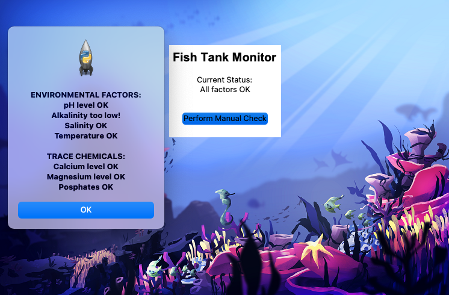
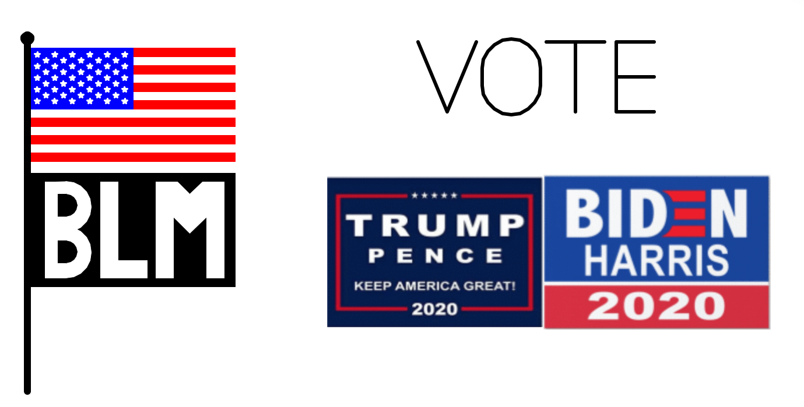

Seating Chart Project
Course: AP Computer Science Applications
Duration: September 8, 2021 - September 19, 2021
The objective of this project was to create an interactive, animated seating chart using Greenfoot in Java. We were instructed to create two different animations: one that involved only ourselves and one with our group. My personal method involved me moving around the classroom and changing the background. Our group method randomly selected a student from the class and created flying images of them on the screen. The entire class worked on the exact same repository, which created multiple challenges. One difficult part of this project was making sure my code worked, and didn't conflict with anyone else's code. Another challenge was pushing the code and merging the code, since there were so many people, sometimes students would override others' work which created a lot of difficulty. The code is available on GitHub. Two skills that I developed through the project were working on programs with a large number of people, this involved getting a stronger understanding of Git and version control. Another skill that I learned throughout this project was reading documentation, because I had to research some methods online, because I wasn't very familiar with some things in Greenfoot.

Fish Tank Project
Course: AP Computer Science Principles
Duration: February 23, 2021 - March 10, 2021
The objective of this project was to analyze weaknesses and problems within the fish tank software given to us by our client company. Then, we were instructed to come up with improvements for the program and security suggestions for the company. In order to communicate these improvements and suggestions to the client, my partner and I had to create a client report. Additionally, my teammate and I made multiple changes to the fish tank software. Finally, our last deliverable to our client was a video that showed them our findings, our methodology, and how the software functions after our changes. Throughout this entire process, we documented our work. For this project, we had equal roles in the group, we both worked on documentation and the code. Initially we struggled to work together because of the lack of communication since we only had class together two times a week, but we were able to exchange contact information and collaborate effectively despite the initial struggles of remote learning. My teammate and I received an A on this project because we were very thorough and completed everything listed on the rubric. Finally, over the course of this project, two skills that I demonstrated were analyzing a piece of software for problems and generating a client report.
Algorithms & Art Project
Course: AP Computer Science Principles
Duration: October 9, 2020 - November 15, 2020
The objective of the program was to create a piece of art on current events using Python and the Turtle library. The current events my teammate and I decided to focus on were the Black Lives Matter movement, the upcoming presidential election between Biden and Trump, and voter turnout. The final image rendered by the program displays an American flag, a BLM flag, the word “VOTE”, and the campaign images for both Biden & Trump. Throughout the project, my teammate and I documented our work. Once we completed the project, we created a video to show our program code and demonstrate the functionality of our program. For this project, we had equal roles, we both programmed and did documentation everyday for the duration of the project. One problem we encountered was being able to work on the same python file at the same time. We were able to solve this problem and work together effectively by having one person program while the other person did documentation, and then we switched off periodically. My teammate and I received a B on this project because we didn’t have multiple things outlined on the rubric. However, the feedback I received helped me better understand the rubric for future projects. Finally, throughout the project, two skills that I learned and displayed were implementing algorithms into my programs and using the scrum process to document work and collaborate with others.
